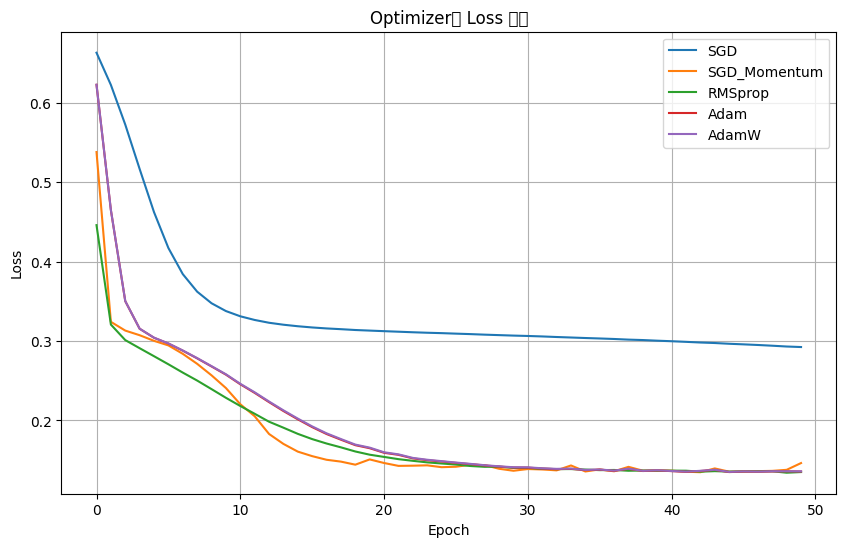
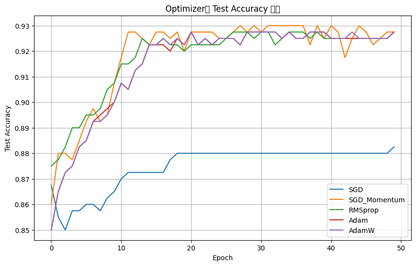

CH 01 다층 퍼셉트론과 최적화함수의 자리#
다층 퍼셉트론(MLP)은 선형 변환과 비선형 활성화(ReLU 등)를 층층이 쌓아, 직선 하나로는 못 가르는 경계까지 휘어 맞추는 모델이다. 오늘 실습의 토대 모델은 nn.Sequential로 Linear(2,16) → ReLU → … → Linear(16,2)처럼 쌓은 단순한 분류기다. 구조가 같아도, 손실 표면 위에서 가중치를 "어떤 방식으로 움직일지"는 최적화 알고리즘이 정한다.
경사하강법의 갱신식 w := w − α · ∂L/∂w 자체는 같지만, 옵티마이저마다 이 한 걸음을 다듬는 방법이 다르다. SGD는 기울기 방향으로 고정 학습률만큼 그냥 간다. 여기에 모멘텀을 더하면 직전 갱신 방향을 관성처럼 일부 이어받아(여기선 0.9) 진동을 줄이고 골짜기를 더 빨리 내려간다. RMSprop은 파라미터별로 최근 기울기 제곱의 평균으로 학습률을 적응적으로 조절하고, Adam은 모멘텀(1차)과 RMSprop의 적응(2차)을 합친다. AdamW는 Adam에 가중치 감쇠를 분리해 붙인 변형이다.
구조·초기값·에폭을 전부 똑같이 고정하면, 최적화 알고리즘만 바꿔도 수렴 속도와 최종 정확도가 의미 있게 갈릴 것이다. 특히 모멘텀이나 적응적 학습률이 있는 쪽이 plain SGD보다 빠르게, 더 낮은 손실로 내려갈 것이다 — 같은 MLP에 다섯 옵티마이저를 붙여 확인한다.
make_moons 데이터에 동일한 MLP를 두고 SGD부터 AdamW까지 다섯 개를 같은 조건으로 50 에폭 돌려 곡선을 겹쳐 봤다.CH 02 같은 MLP, 다섯 옵티마이저 비교#
공정한 비교가 핵심이라, 매 실험마다 torch.manual_seed(42)로 초기 가중치를 똑같이 맞추고 모델을 새로 만든 뒤 옵티마이저만 교체했다. 데이터는 make_moons(n_samples=2000, noise=0.25)를 8:2로 나눠 학습 1600개, 손실은 CrossEntropyLoss, 50 에폭으로 통일했다.
SGD | Epoch 10/50 | Loss: 0.3377 | Test Acc: 0.8650 SGD | Epoch 50/50 | Loss: 0.2924 | Test Acc: 0.8825 SGD_Momentum | Epoch 10/50 | Loss: 0.2408 | Test Acc: 0.9075 SGD_Momentum | Epoch 30/50 | Loss: 0.1367 | Test Acc: 0.9300 SGD_Momentum | Epoch 50/50 | Loss: 0.1464 | Test Acc: 0.9275 RMSprop | Epoch 10/50 | Loss: 0.2285 | Test Acc: 0.9075 RMSprop | Epoch 50/50 | Loss: 0.1350 | Test Acc: 0.9275 Adam | Epoch 10/50 | Loss: 0.2577 | Test Acc: 0.9000 Adam | Epoch 50/50 | Loss: 0.1357 | Test Acc: 0.9275 AdamW | Epoch 10/50 | Loss: 0.2582 | Test Acc: 0.9000 AdamW | Epoch 50/50 | Loss: 0.1359 | Test Acc: 0.9275


가설대로 갈렸다. plain SGD는 50 에폭을 돌려도 손실 0.2924 / 정확도 0.8825에서 멈췄는데, 나머지 넷은 같은 50 에폭에 손실 0.135 근처, 정확도 0.9275까지 내려갔다. 차이는 단순히 최종값만이 아니라 속도에도 있었다 — SGD_Momentum은 10 에폭 만에 이미 0.9075로, SGD가 50 에폭에 도달한 0.8825를 넘어섰다. "옵티마이저는 그냥 기울기 따라가는 도구"가 아니라, 같은 손실 표면에서 얼마나 빨리·낮게 내려가느냐를 가르는 선택이다.
그렇다고 "Adam이 항상 최고"는 아니다. 이 문제에선 모멘텀 붙인 SGD와 RMSprop·Adam·AdamW가 거의 똑같은 곳(0.9275)에 모였다. 차이를 만든 건 "적응형이냐"보다 "관성·적응 중 무엇이든 plain SGD의 고정 학습률을 넘어섰느냐"였다. 데이터·구조가 바뀌면 우열도 바뀔 수 있으니, 옵티마이저는 고르는 게 아니라 같은 조건에서 비교해 정하는 대상이다.
CH 03 순서가 있는 데이터 — LSTM이 푸는 문제#
승객 수, 주가, 문장처럼 "앞이 뒤를 설명하는" 데이터는 MLP에 통째로 넣기 어렵다. 순환 구조(RNN)는 한 스텝씩 읽으며 상태를 다음 스텝으로 넘기는데, 시퀀스가 길어지면 앞쪽 정보가 점점 희미해지는 기울기 소실 문제가 생긴다. LSTM은 여기에 셀 상태(cell state)라는 별도의 정보 통로를 하나 더 두고, 세 개의 게이트로 무엇을 지우고(망각 게이트) 무엇을 새로 담고(입력 게이트) 무엇을 내보낼지(출력 게이트)를 조절한다. 덕분에 한참 전의 정보도 끝까지 살려 보낼 여지가 생긴다.
실습 중 막혔던 지점이 있었다 — "건망증을 해결하려고 나온 게 어텐션 아니었나? LSTM과 뭐가 다른가?" LSTM이 곧 어텐션이라면, 시계열 예측에서도 긴 과거를 완벽히 기억할 것이다. 그렇다면 LSTM 예측은 추세든 피크든 다 맞혀야 한다 — airline 데이터로 어디까지 맞고 어디서 어긋나는지 확인하면 둘의 차이가 드러난다.
LSTM과 어텐션은 같은 "건망증"을 다른 방식으로 다룬다. LSTM은 차례대로 읽으며 정보를 고정 크기의 요약본 하나에 눌러 담는 순차적 메모리다 — 기억력을 늘리긴 했지만 결국 한 벡터로 압축한다. 어텐션은 요약본만 믿지 않고, 예측 시점마다 앞의 원본 단어들을 전부 다시 펼쳐 보고 필요한 부분에 가중치를 준다(오픈북 방식). 즉 LSTM≠어텐션이며, 어텐션은 LSTM의 "요약본 하나만 넘기기"의 한계에 반기를 든 다음 단계다. 오늘 실습은 그 직전 단계인 LSTM 자체의 한계까지 본다.
CH 04 airline LSTM, 12개월로 다음 1개월#
월별 항공 승객 데이터(144개월)를 MinMaxScaler로 0~1로 정규화한 뒤, 과거 12개월을 입력으로 다음 1개월을 예측하는 시퀀스로 잘랐다. 모델은 LSTM(input 1, hidden 300, batch_first) → Linear(300,1) → Sigmoid, 손실은 회귀용 MSELoss, 옵티마이저는 RMSprop(lr 0.001)로 300 에폭 학습했다. 입력 형태는 (batch, 12, 1)이다.
Epoch [ 1/300] - Train MSE Loss: 0.079773
Epoch [ 50/300] - Train MSE Loss: 0.006203
Epoch [150/300] - Train MSE Loss: 0.001229
Epoch [300/300] - Train MSE Loss: 0.001757
학습 완료: 30.23초
테스트 MSE Loss: 0.021919
원래 승객 수 기준 RMSE: 76.691
truth prediction error
3 360.000000 335.142242 24.857758
5 406.000000 332.667847 73.332153
9 548.000000 450.767822 97.232178
다음 1개월 예측 승객 수: 360.25

예측 곡선은 우상향 추세를 잘 따라갔지만, 표본에서 보이듯 실제 548명 구간을 450명으로 예측해 약 97명을 과소예측했다 — 피크가 높을수록 오차가 커졌다(RMSE 76.7명). CH03의 가설에 대한 답이 여기 있다. LSTM은 12개월을 한 요약 상태로 압축하다 보니, 급격히 치솟는 성수기의 정점을 보수적으로 깎아 낸다. "추세는 맞히되 피크는 과소예측"이 정확히 요약본 압축의 한계이고, 이게 어텐션이 필요해진 이유로 이어진다.
CH 05 시퀀스를 한 벡터로 — pooling이 바꾸는 정확도#
IMDB 영화평 감성 분류(긍정/부정)를 LSTM으로 풀 때, 단어별로 나온 LSTM 출력들을 분류기에 넘기려면 결국 한 벡터로 모아야 한다. 이 "모으는 방식(pooling)"이 변수다. 마지막 스텝 출력만 쓰는 last, 전 스텝 평균인 mean, 최댓값인 max, 평균과 최댓값을 이어 붙인 meanmax를 비교했다. 또 입력 문장 길이(max_len)도 함께 바꿔 봤다.
기본 last (max_len 80) test_acc: 64.08% [trial 1] pooling=last max_len=120 val_acc=79.40% [trial 4] pooling=max max_len=120 val_acc=75.94% [trial 8] pooling=max max_len=200 val_acc=84.46% [trial 14] pooling=meanmax max_len=200 val_acc=86.16% [trial 19] pooling=meanmax max_len=200 val_acc=87.14% (best) best 하이퍼파라미터: max_len=200, hidden_dim=256, pooling=meanmax, dropout=0.36 하이퍼파라미터 중요도: dropout 0.381 | max_len 0.368 | pooling 0.051
pooling 방식만으로 정확도가 크게 움직였다. 마지막 한 스텝만 보는 last(64.08%)는 문장 전체를 마지막 요약본 하나에 의존하느라 낮았고, 평균(mean)·평균+최댓값(meanmax)으로 갈수록 올라가 best 조합(meanmax)에서 검증 87.14%까지 갔다. CH04에서 본 "요약본 하나로 압축"의 한계를, 여러 스텝을 함께 모으는 pooling이 일부 완화해 준 셈이다. 한 스텝이 아니라 시퀀스 전체에서 정보를 끌어모으는 방향이 어텐션의 발상과 같은 줄기다.
흥미롭게도 항상 "길수록·복잡할수록 좋다"는 아니었다. max_len을 80에서 200으로 늘리면 정확도가 오르기도 했지만(trial 8), 같은 200이라도 dropout이 0.49로 과하면 53.96%까지 떨어졌다(trial 3) — 중요도 표에서도 dropout(0.381)·max_len(0.368)이 pooling(0.051)보다 영향이 컸다. 즉 "어떤 옵티마이저·어떤 pooling"만큼이나 정규화와 입력 길이의 균형이 결과를 좌우한다. 한 요인만 보고 결론 내면 안 된다.
📚 근거 출처
- 실습 코드 —
from_colab_deep_learning/0616-s(optimizer_compare · airline_lstm · movie_imdb_lstm) - 강의 PDF — 딥러닝_다층퍼셉트론
- 공식 문서 — PyTorch 옵티마이저(SGD·Adam)·LSTM